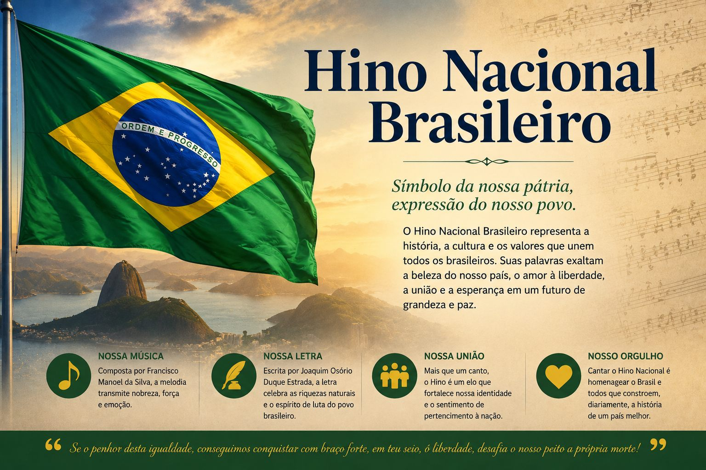

Cidadania
O Hino Nacional Brasileiro: significado, importância e valor cultural

O Hino Nacional Brasileiro é um dos principais símbolos do país, ao lado da bandeira, do brasão e do selo nacional. Mais do que uma música oficial, ele representa a história, os valores e a identidade do povo brasileiro. Presente em momentos marcantes da vida social, o hino conecta gerações e reforça o sentimento de pertencimento à nação.
Origem do Hino Nacional
A melodia do hino foi composta por Francisco Manuel da Silva no século XIX, logo após a independência do Brasil. Já a letra foi escrita anos depois por Joaquim Osório Duque Estrada, sendo oficializada em 1922.
A composição reflete o espírito de um país que buscava afirmar sua identidade, destacando valores como liberdade, coragem e orgulho nacional.
Onde o Hino Nacional é cantado?
O hino faz parte de diversos momentos importantes da vida brasileira, como:
- Eventos escolares e atividades cívicas
- Cerimônias oficiais e militares
- Competições esportivas, especialmente jogos internacionais
- Datas comemorativas, como a Independência do Brasil
- Formaturas e solenidades públicas
Esses momentos reforçam o respeito aos símbolos nacionais e ajudam a manter viva a cultura do país.
Importância na história do Brasil
O Hino Nacional acompanha o Brasil desde sua formação como país independente. Ele simboliza a conquista da liberdade e os ideais de uma nação soberana.
Ao longo da história, foi cantado em momentos de celebração, mas também em períodos difíceis, funcionando como uma expressão de união e resistência do povo brasileiro. Sua presença constante fortalece a memória coletiva e o sentimento de identidade nacional.
Importância cultural
Culturalmente, o hino é parte da formação de todo brasileiro. Ele é ensinado nas escolas, cantado em eventos e transmitido entre gerações.
Mesmo em um país com grande diversidade cultural, o hino funciona como um elemento de união. Ele aproxima pessoas de diferentes regiões, crenças e realidades, reforçando a ideia de que todos fazem parte de uma mesma nação.
A beleza do Hino Nacional Brasileiro
O Hino Nacional Brasileiro é frequentemente considerado um dos mais bonitos do mundo. Isso se deve a dois aspectos principais:
- A melodia é marcante, solene e emocionante, despertando sentimentos de orgulho e respeito.
- A letra é rica em linguagem poética, com imagens fortes e expressivas que exaltam a natureza, a liberdade e a grandeza do Brasil.
Comparado a hinos de outros países, que muitas vezes são mais simples e diretos, o brasileiro se destaca por sua profundidade e sofisticação, sendo também uma verdadeira obra artística.
Por que conhecer, cantar e honrar o hino?
- Conhecer o hino é entender melhor a história e os valores do Brasil.
- Cantar promove união e reforça o sentimento de pertencimento.
- Honrar vai além do momento de execução, significa agir com respeito, cidadania e responsabilidade no dia a dia.
Conclusão
O Hino Nacional Brasileiro é muito mais do que uma composição musical, ele é um símbolo vivo da história, da cultura e da identidade do país. Presente em momentos importantes, ele reforça valores essenciais e une o povo brasileiro.
Conhecer, compreender e valorizar o hino é uma forma de reconhecer o passado, viver o presente com consciência e contribuir para um futuro melhor para o Brasil.
Gostou desta matéria? Veja outras no blog, conheça nossas referências ou fale com a gente.